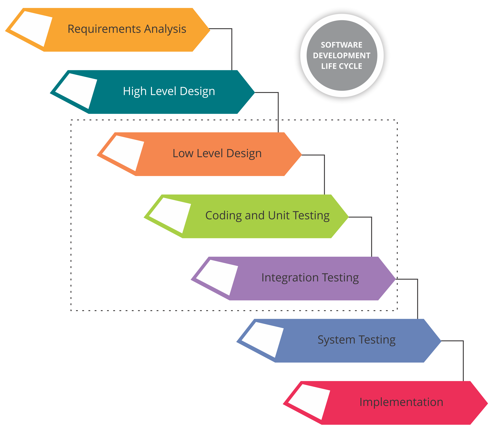
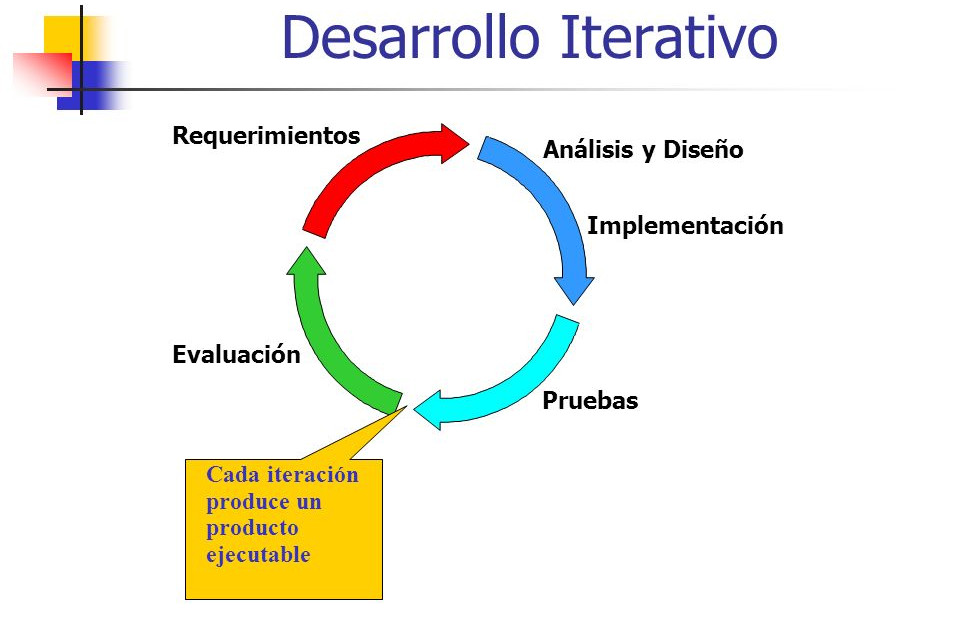
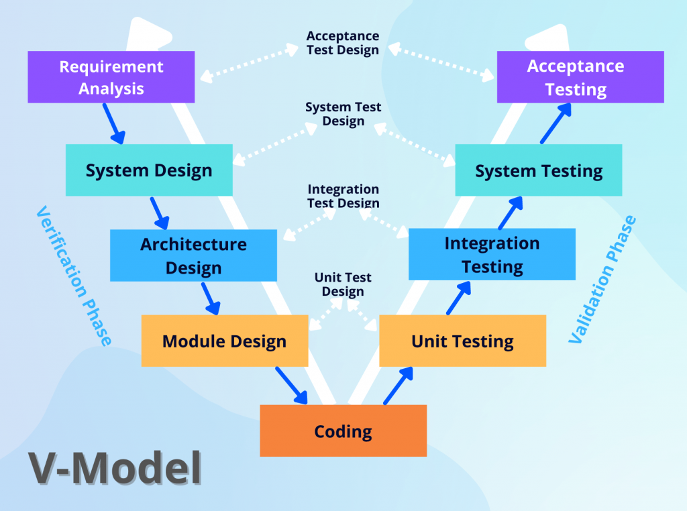
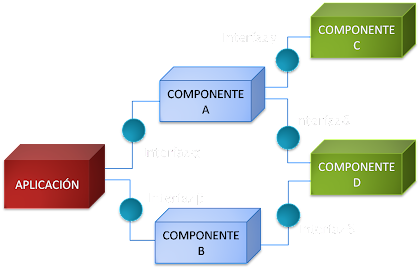
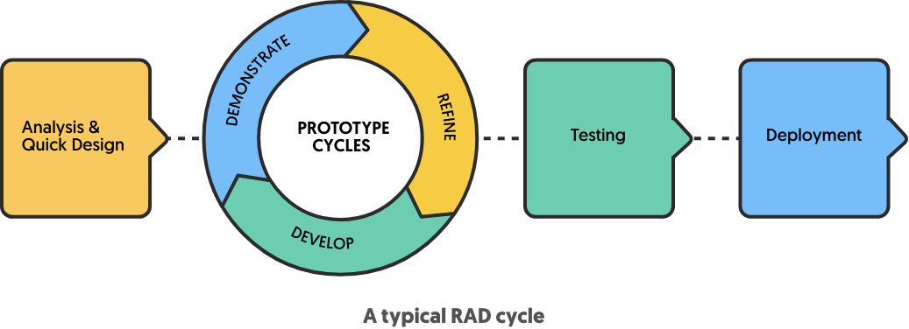

El modelo en cascada
Este processo de desarrollo está organizado en etapas que se ejecutan en un orden predeterminado. Es decir, de manera inflexible. Es muy útil cuando ya se tienen los objectivos preestablecidos y hay buena comunicación entre el cliente y desarrollador. Puede llegar a ser problemático si se necesita entregar el software antes de que el modelo de desarrollo ya se haya finalizado, o no se ha hecho un buen planeamiento para el proyecto.
El modelo iterativo
Es derivado del modelo en cascada. Su objectivo es reducir los riesgos de errores en el planeamiento para el software y también permitir elaborar una versión mejor del mismo en cada iteración. En otras palabras, una iteración es una ejecución de etapas con un objectivo a corto plazo y que permite ir madurando las ideas en las siguientes iteraciones, que luego entregarán una versión mejor del software. Problemas: Es más costoso en tiempo y recursos, y también puede ocasionar problemas puesto que no todo el planeamiento está hecho desde el inicio, sino que se van implementando elementos nuevos en cada iteración. Esto puede generar una incompatibilidad o conflicto.
El modelo incremental
Es parecido con el modelo iterativo, pero está hecho de forma más planeada. El primer incremento o etapa de construcción del programa suele ser un producto esencial con los requisitos básicos. Luego, los siguientes incrementos llegan para añadir más funciones al proyecto y así seguir con su desarrollo. Una gran ventaja de este modelo es la rápida entrega del software operativo, pero que estará incompleto por lo menos en el primer incremento. Un inconveniente es que cada fase de una iteración o incremento es demasiado rígida y no superpone con otras. Además, pueden surgir problemas en el caso de que no se hayan reúnido todos los componentes necesarios para el programas através de los incrementos.

El modelo en V
Este processo lleva el nombre "En V" porque su diagrama representativo se parece con la letra V. Primeramente se realizan 4 etapas en el processo de desarrollo, antes de llevar a cabo la elaboración del código. Una vez que estén hechas, empieza a trabajarse en el código y también se realizan otras 4 etapas para la depuración del programa, siendo que cada una de ellas está relacionada con una de las otras cuatro etapas. Apesar de ser bastante eficiente y determinar bien el processo, el modelo en V puede llegar ser demasiado sencillo para algunos casos, y también no tiene suficiente flexibilidad para adaptarse a cambios en medio del processo, y portanto, promueve un curso lineal del proyecto.
El modelo basado en componentes
El software se desarrolla con base en componentes o trozos de código que ya están hechos, y que son unidos através de interfaces, para que ellos puedan comunicarse y estructurar el software. Es una forma muy eficiente de desarrollo, pero genera una gran dependencia del software a los componentes, y esto por su parte hace más difícil que el software sea modificado o que reciba actualizaciones.
El modelo de desarrollo rápido
Tiene el objectivo de entregar el software lo más rápido y eficiente posible. El equipo de desarrollo mantiene un contacto fluido con el cliente y eso les permite estructurar bien los objectivos para el software. Para eso, se requiere una gran implicación y trabajo en equipo, y eso puede suponer un problema.
